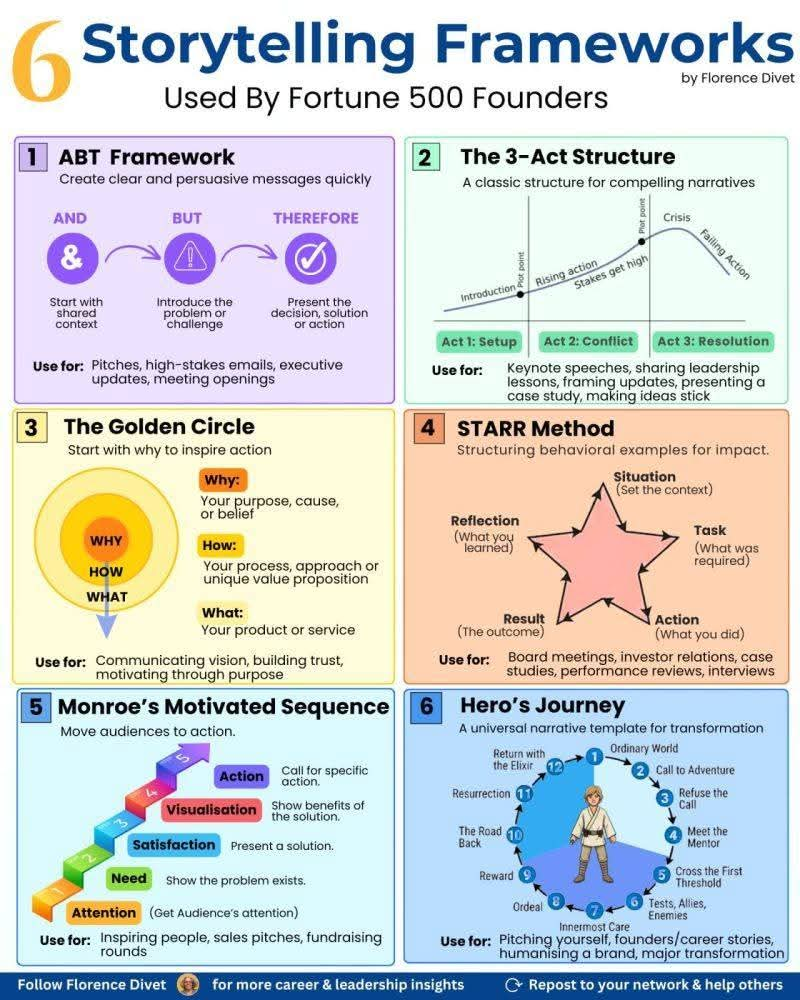

Aroma kopi Jabarano yang baru diseduh menguar, berebut dominasi dengan wangi sisa hujan petang di kawasan Dago Pakar. Di sudut sebuah kafe berkonsep minimalis industrial, empat pasang mata menatap lekat sebuah papan tulis portabel kecil yang sengaja dibawa oleh Kenji. Sebagai lulusan Teknik Industri dari salah satu institut kedirgantaraan ternama di Bandung, mereka berempat memiliki kebiasaan unik: membedah masalah kehidupan dengan pisau analisis optimasi sistem.
Malam itu, agendanya cukup krusial. Struktur bisnis rintisan logistik ramah lingkungan mereka, yang diberi nama Eko-Antar, sedang berada di persimpangan jalan. Mereka butuh narasi baru untuk memikat hati para investor dalam pendanaan seri awal yang akan diselenggarakan di Jakarta bulan depan.
Kenji, yang bertindak sebagai kepala operasional, mengetukkan spidolnya ke papan. Ia adalah tipikal pria perfeksionis dengan kacamata berbingkai bulat, sangat menyukai keteraturan ala manufaktur Jepang. Di sebelahnya duduk Aris, sang ahli simulasi sistem yang selalu tenang, didampingi oleh Danu, spesialis ergonomi yang enerjik dan penuh ide meledak-ledak. Tokoh keempat, dan satu-satunya wanita di dalam tim tersebut, adalah Hana. Hana adalah seorang analis rantai pasok yang cerdas, memiliki ketajaman logika yang sering kali membuat ketiga pria di dekatnya kagum sekaligus segan.
Mari kita mulai evaluasi rancangan presentasi kita, ujar Kenji membuka percakapan. Kita tahu performa operasional kita sudah mendekati batas efisiensi Pareto optimum, tetapi jika kita gagal mengomunikasikannya dengan baik kepada para pemodal, semua formula matematis ini hanya akan menjadi tumpukan data mati.
Danu meregangkan otot lehernya, lalu menyahut, Masalahnya adalah cara kita bercerita selama ini terlalu kaku seperti membaca buku teks manual mesin bubut. Investor butuh sesuatu yang menggerakkan emosi, bukan sekadar hitungan waktu siklus baku.
Hana tersenyum kecil sambil menggeser cangkir matcha lattenya. Ia mengambil selembar kertas yang berisi catatan penting mengenai struktur penyampaian pesan. Tepat sekali, Danu. Oleh karena itu, aku sudah merangkum enam kerangka penceritaan yang biasa digunakan oleh para pendiri perusahaan dunia. Kita akan membedahnya satu per satu malam ini untuk melihat mana yang paling sesuai dengan karakteristik Eko-Antar.
1. ABT Framework
Hana menunjuk poin pertama pada catatannya. Kerangka pertama adalah ABT, yaitu And, But, dan Therefore. Ini adalah cara tercepat untuk membangun pesan yang jelas dan persuasif. Mari kita simulasikan untuk pembukaan presentasi kita.
Aris mencoba merangkai kata berdasarkan struktur tersebut. Kita adalah penyedia layanan logistik dengan armada kendaraan listrik di Bandung yang memiliki pertumbuhan pasar hingga dua puluh persen per kuartal, dan kita memiliki sistem algoritma rute terpendek yang sangat efisien. Namun, regulasi zonasi wilayah hijau yang baru di kota ini membatasi ruang gerak operasional konvensional. Oleh karena itu, kita mengembangkan sistem pangkalan relokasi dinamis yang memangkas waktu tunggu hingga lima belas menit.
Kenji mengangguk, mencatat setiap kata dengan saksama. Singkat, padat, dan langsung menuju sasaran. Kerangka ini sangat cocok untuk pembukaan presentasi atau surel tingkat tinggi kepada para eksekutif yang tidak punya banyak waktu. Namun, apakah ini cukup kuat untuk sesi presentasi utama yang berdurasi tiga puluh menit?
2. The 3-Act Structure
Hana menggelengkan kepala. Tentu tidak, Kenji. Untuk sesi utama, kita membutuhkan struktur klasik yang mampu membangun ketegangan naratif. Kerangka kedua adalah Struktur Tiga Babak: Penataan, Konflik, dan Resolusi. Ini seperti grafik performa mesin yang dimulai dari kondisi tunak, mengalami gangguan berupa lonjakan beban kerja, hingga akhirnya menemukan titik kesetimbangan baru.
Danu langsung bersemangat. Aku suka analogi itu! Babak pertama adalah bagaimana kita memulai Eko-Antar dari garasi kecil di kawasan Sukaluyu dengan modal patungan. Babak kedua adalah krisis tahun lalu, ketika harga baterai melonjak tajam dan dua kurir utama kita mengundurkan diri tepat saat pesanan festival kuliner Bandung sedang mencapai puncaknya. Taruhannya sangat tinggi, kita hampir bangkrut!
Lalu babak ketiga adalah bagaimana kita merancang ulang sistem jadwal kerja menggunakan prinsip ergonomi fisik dan kognitif, sehingga kurir tidak stres dan produktivitas meningkat kembali, tambah Aris dengan senyum lebar. Cerita seperti itu akan membuat penonton terhanyut dalam dinamika perjuangan kita.
3. The Golden Circle
Hana mengetuk meja pelan, mengalihkan perhatian tim ke konsep berikutnya. Struktur ketiga adalah Lingkaran Emas milik Simon Sinek. Mulai dari Mengapa, lalu Bagaimana, dan terakhir Apa. Kebanyakan perusahaan gagal karena mereka menjual apa yang mereka buat, bukan mengapa mereka membuatnya.
Kenji merenung sejenak, memandangi lampu-lampu kota Bandung yang berpendar di kejauhan. Mengapa kita mendirikan Eko-Antar? Bukan sekadar untuk mengantar paket lebih cepat. Kita ingin mengembalikan udara bersih ke kota kelahiran kita ini. Kita ingin anak-anak di Bandung bisa berjalan kaki ke sekolah tanpa harus menghirup asap knalpot yang pekat. Itu adalah Mengapa kita.
Bagaimana kita melakukannya? Dengan mengintegrasikan keahlian teknik industri kita: optimasi rute, pengurangan pemborosan, dan manajemen rantai pasok yang ramah lingkungan, sambung Hana dengan mata berbinar. Dan Apa produknya? Sebuah layanan logistik hijau berbasis aplikasi terintegrasi. Jika kita menekankan bagian Mengapa di awal, kita akan membangun kepercayaan yang mendalam dengan investor yang memiliki visi serupa.
4. STARR Method
Pembahasan semakin mendalam ketika jarum jam menunjukkan pukul sepuluh malam. Hana kemudian menjelaskan metode keempat, yaitu STARR: Situasi, Tugas, Tindakan, Hasil, dan Refleksi. Ini sangat berguna ketika investor mulai menanyakan hal-hal spesifik mengenai kemampuan manajemen krisis kita, jelas Hana.
Aris mengambil alih penjelasan untuk bagian ini. Mari kita gunakan contoh kasus nyata saat kita menangani lonjakan pengiriman pada masa libur akhir tahun lalu. Situasinya: volume paket meningkat tiga ratus persen. Tugas kita: mempertahankan tingkat pelayanan di atas sembilan puluh lima persen tanpa menambah armada secara permanen. Tindakan kita: menerapkan sistem lintas-bongkar atau cross-docking sementara di tiga titik strategis kota Bandung.
Hasilnya? Tingkat pelayanan kita bertahan di angka sembilan puluh tujuh persen, timpal Danu. Dan refleksinya adalah bahwa fleksibilitas jaringan jauh lebih berharga daripada kapasitas statis yang besar namun kaku. Metode ini membuat jawaban kita terlihat sangat terstruktur dan berbasis data empiris.
5. Monroe's Motivated Sequence
Selanjutnya, Hana memaparkan metode kelima yang berfokus pada dorongan untuk bertindak: Urutan Termotivasi Monroe. Metode ini terdiri dari lima tahapan: Perhatian, Kebutuhan, Kepuasan, Visualisasi, dan Tindakan. Ini adalah alat bantu terbaik untuk sesi penutup presentasi atau saat kita melakukan promosi penjualan langsung kepada pelanggan korporat besar.
Kenji mencoba menyusun narasinya secara lisan. Pertama, kita menarik perhatian dengan menampilkan data kerugian finansial akibat kemacetan total di jalur arteri Bandung. Kedua, kita tunjukkan kebutuhan mendesak akan efisiensi pengiriman komoditas lokal. Ketiga, kita tawarkan kepuasan melalui platform Eko-Antar yang mampu memotong jalur distribusi sekunder.
Keempat, kita visualisasikan masa depan di mana biaya logistik turun hingga tiga puluh persen dan langit kota kembali biru, lanjut Hana. Dan kelima, kita berikan panggilan aksi yang jelas: bergabunglah dengan putaran pendanaan kita hari ini untuk merealisasikan masa depan tersebut.
6. Hero's Journey
Terakhir, Hana menjelaskan tentang Perjalanan Sang Pahlawan, sebuah templat narasi universal mengenai transformasi mendalam. Di sini, pahlawannya bukanlah kita, melainkan pelanggan kita atau bahkan kota Bandung itu sendiri yang sedang berjuang melewati berbagai rintangan untuk mencapai tingkat tatanan yang lebih baik.
Dengan menerapkan keenam kerangka penceritaan tersebut, keempat sekawan itu menyadari bahwa ilmu teknik industri tidak melulu soal angka, rumus linear programming, atau tata letak pabrik yang dingin. Ilmu yang mereka miliki adalah tentang manusia, sistem, dan bagaimana cara menyampaikan kebenaran data tersebut melalui untaian kisah yang memikat hati.
Malam semakin larut, namun semangat di sudut kafe itu justru semakin hangat. Dengan persiapan narasi yang matang, Eko-Antar kini tidak hanya siap menyajikan efisiensi matematis, tetapi juga sebuah kisah perubahan yang nyata bagi dunia.